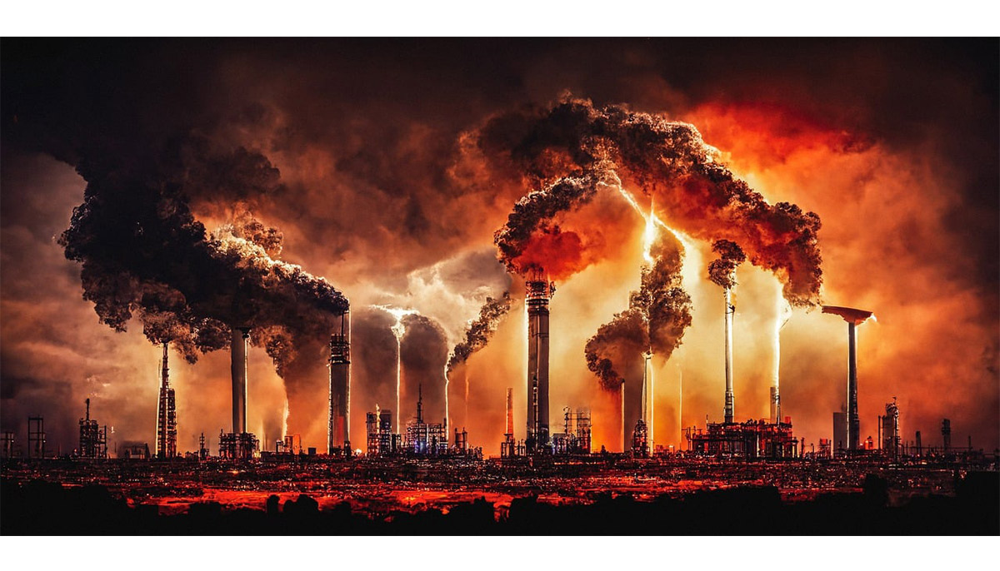

O que é a crise climática?
A crise climática é uma emergência global causada pelo aumento de gases de efeito estufa na atmosfera. Isso resulta em mudanças perigosas no clima, como temperaturas extremas, elevação do nível do mar e desastres naturais mais frequentes.
Como ela acontece
Os gases de efeito estufa, como dióxido de carbono (CO₂), metano (CH₄) e óxido nitroso (N₂O), são essenciais para manter a temperatura da Terra adequada à vida. No entanto, a atividade humana tem aumentado drasticamente a concentração desses gases na atmosfera, criando um desequilíbrio.

Atividades humanas que intensificam a crise climática:
- Queima de combustíveis fósseis:
- Usados em transporte, indústria e geração de energia, liberam grandes quantidades de CO₂.
- Desmatamento:
- A remoção de florestas para agricultura ou urbanização reduz a capacidade de absorção de carbono pelas árvores.
- Agricultura intensiva:
- Produção de metano por práticas agrícolas, como criação de gado e cultivo de arroz.
- Industrializaçã
- Processos industriais liberam gases nocivos e contribuem para o aquecimento global.